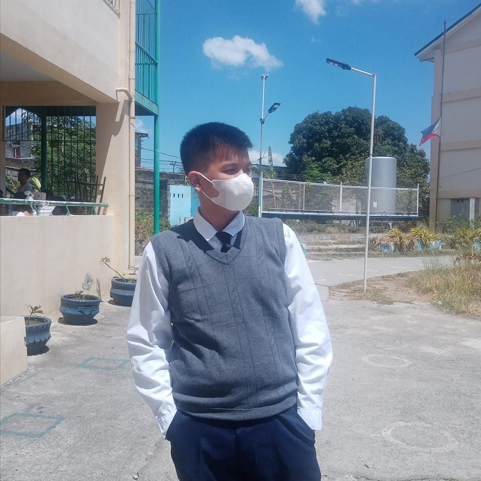

A short info about me

Hello! My name is
Reymundo P. Esteves II
I can be referred to as Rey, Raymond, or JR. I am currently a first year student taking Bachelor of Technical-Vocational Teacher Education (BTVTEd) major in Computer Programming at Technological University of the Philippines - Cavite Campus.
As of the time of writing, I am currently 18 years old. I love reading books, as well as Internet and Wikipedia articles (most preferably those that are technology-related, and I chose to take the Education program as I would like to impart knowledge to the learners of the future generations.
I chose to take the Education program because my mother is also currently a high school teacher, and I am inspired to go the same career path as her. Also, I also like to teach and explain stuff (especially about technology, computers, and other similar things), and hence another reason why I chose this program.
I am expecting to learn a lot from this course, and I am hoping that I bring those things I am about to learn when I am already in my chosen career path.
Recent Reflections/Journals
Other trivia about me
Pronouns:
He/Him
Birthday:
November 24
Likes:
Technology-related books, articles, and news; exploring Linux and other operating systems; learning music theory; browsing through social media